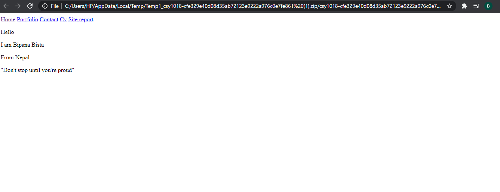
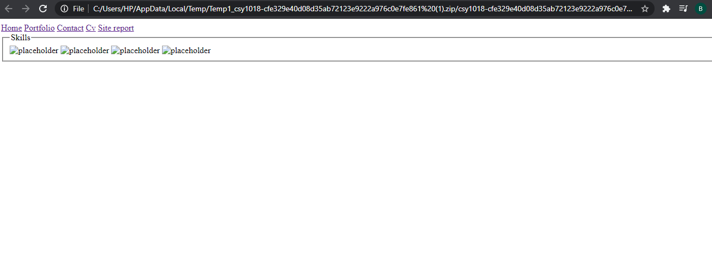
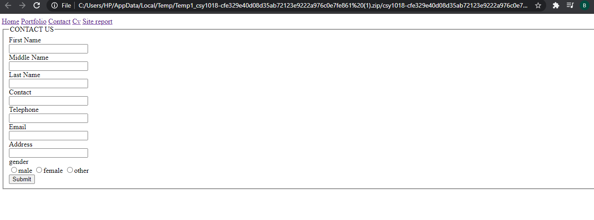
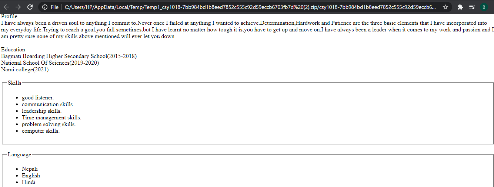
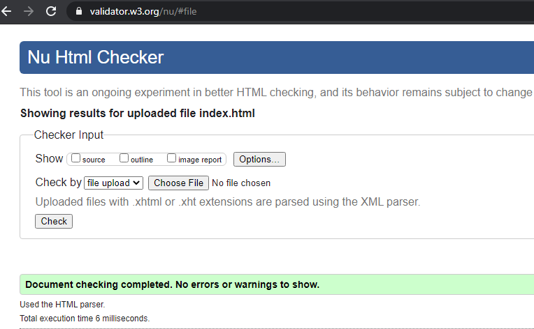
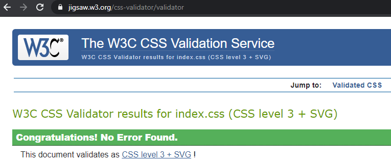
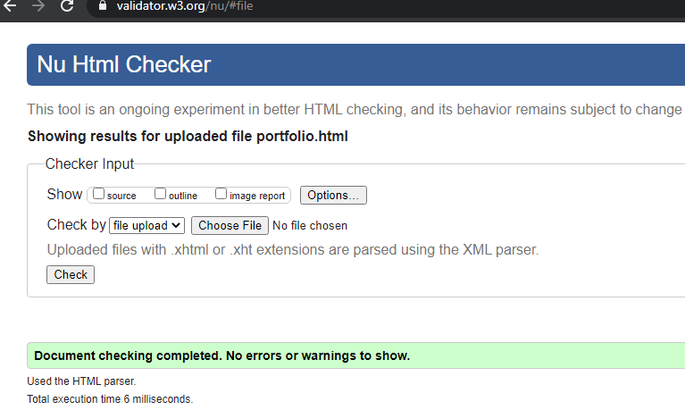
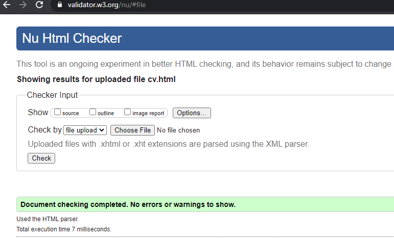
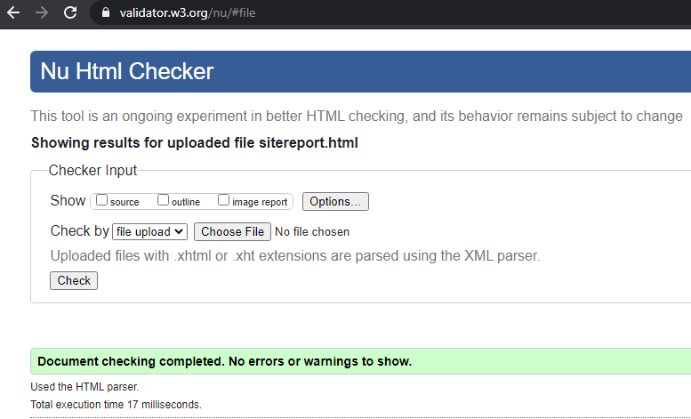

Hello again,Frankly speaking it was kind of tough for me at the beggining,I couldn't understand stuff. I felt like quitting.the load was something my mind couldn't bear but overthing all these could only lead to downfall and downfall is something that i can not afford.My hardwork and dedication has always been my greatest strength.Even when i'm exhausted,i tried to push a little further every other time and now, am doing pretty good then i had expected.I actually was struggling with coding but then I did some self study and took help from teachers and i am finally able to do some codings.I watched youtube videos for learning even more.Now,I am capable enough to create a website.
This module was supposed to be the tough module in comparison to other but it wasn't that tough after i researched and did some self study.I found this module quite hard at the beggining but now it find this module quite intresting.I learnt to make the proper use of codes.I was stuggling in making responsive view but i managed to design it as well.
At first,the made the home page of my portfolio.it really wasn't that big deal to prepare the home page.in home page I prepared the menu,as mentioned in th assignment in all the pages.for preparing the home page I mentioned a short introduction with menu on the top.I used background image from google for the better look.in css of home page i used shadow syntax for the introduction part and tansferred menu to the right side.I kept one tagline there saying,"winners don't do diffrent things,they do things differently.",with some transition.
Youtube
I watched a youtube video for help in designing menu along with their position.
Reference
Hindi Tech Tutorials.youtube[online].Available from:
google search[acessed 4 october 2019]
Online Images
I used windows image as a background image for my portfolio.
Reference
Wallpaper.caveman.Available from:
google search
(anon. , n.d. , s.l. , s.n. , n.k.)
Bibliography
I used one tagline in home page form self-help book "you can win" by shiv khera that is"winners don't do diffrent things,they do things differently."
Reference
Title - You can win:A step by step tool for top achievers
Author - shiv khera
Publication date - May 22,2014
length - 308 pages
secondly,I prepared the portfolio page where I kept some placeholder images as haven't done anything right now.I used fielset for thr better look.some dummy images are placed which will be replaced later on during second assignment.
Online Images
I used dummy images as a palceholder from google in portfolio page.
Reference
Product Placeholder image png.Available from:
google search
(anon. , n.d. , s.l. , s.n. , n.k.)
on third page i prepared the contact form where complete information can be filled and at last it can be submitted.information like name,address,email etc were on the contact page.I used the hover and the fieldset property there.
we were supposed to prepare the cv on the fouth page and I kept the picture of myself there at the left side and I wrote about myself there regarding my hobbies,education and so on.I uesd fieldset property there as well and grid to manage the position.
This is how my html looked like at the beggining.




This is how my website looked like at the beggining but eventually I was able to make a better website as you can see my progress comparing my first and the website I designed at last.
Validation





Journal
- May 11,2021 - Assignment arriving date
- May 12,2021 - Started doing assignment
- May 13,2021 - Made simple outline
- May 15,2021 - Gave background images
- May 17,2021 - Designed home page and other pages basic layout
- May 18,2021 - Created menu on all pages
- May 23,2021 - Designed contact page
- May 24,2021 - Designed all the pages including responsive view
- May 26,2021 - prepared site report
- May 28,2021 - site report completed
- May 30,2021 - submission date
Conclusion
Therefore,this is the end of first time assignment.It was really fun doing this assignment and now I finally have confidence of creating a website.
{kind=link}
{kind=link}